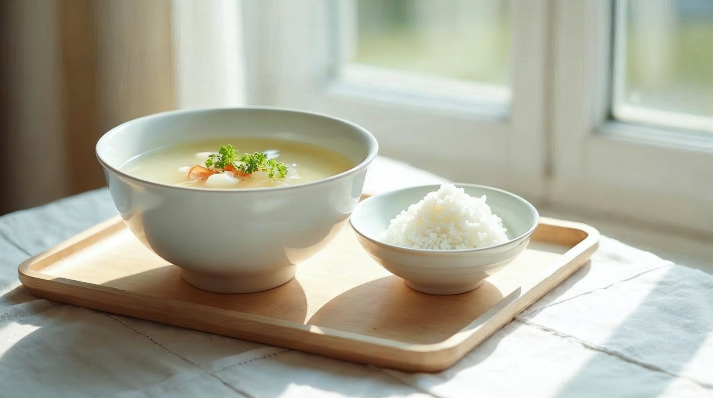
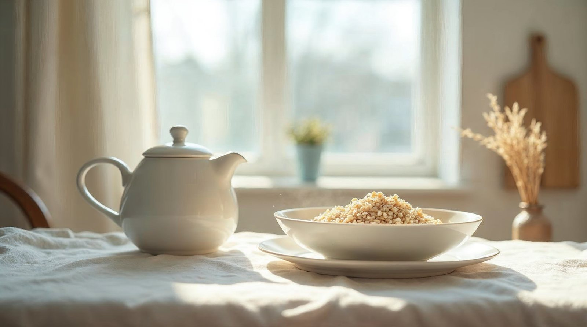
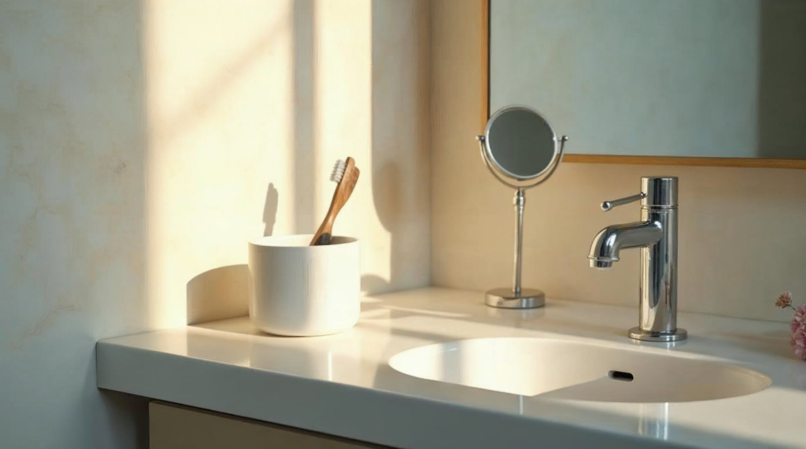
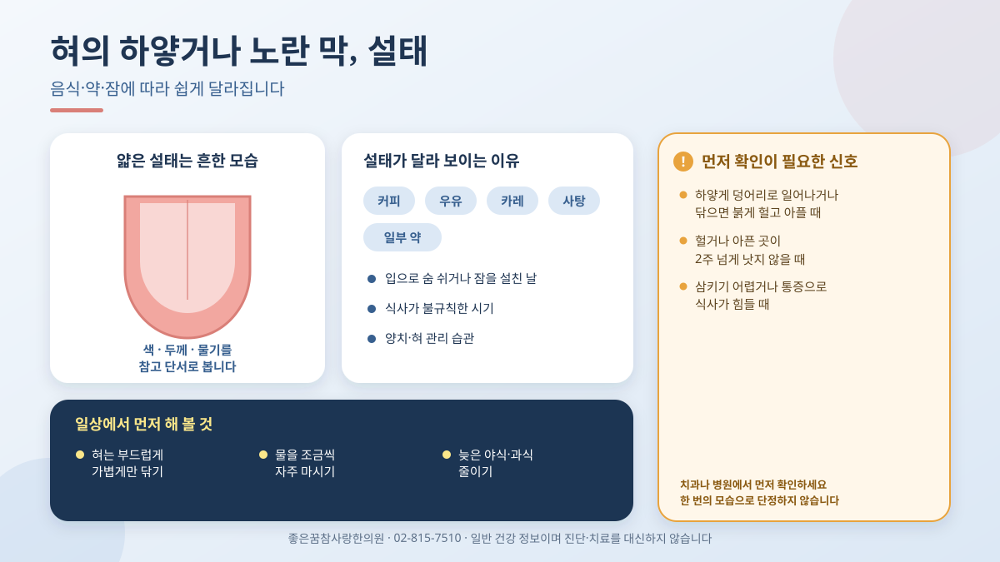

이종호 한의사 감수좋은꿈참사랑한의원 대표원장 (한의사 면허번호 19769)발행 2026-11-23 · 수정 2026-11-26
이 글의 차례
- 왜 이런 불편이 생길 수 있나요
- 설태를 볼 때 살피는 네 가지
- 자주 하는 오해
- 예를 들면 이런 경우입니다
- 먼저 이렇게 여쭙니다
- 일상에서 먼저 해 볼 수 있는 것
- 스스로 점검해 보세요
- 한의원에서 함께 살필 수 있는 경우
- 왜 아침에 설태가 가장 두껍게 보일까요?
- 설태와 헷갈리기 쉬운 모습은 무엇인가요?
- 설태와 소화는 어떻게 이어서 보나요?
- 흰 설태와 누런 설태는 한의학에서 어떻게 읽나요?
- 계절과 나이에 따라서도 달라지나요?
- 설태가 얇거나 거의 없을 때는 무엇을 여쭙나요?
- 설태를 관리할 때 줄여 보면 좋은 습관
- 설태가 신경 쓰일 때 식사는 이렇게 바꿔 보세요
- 2주 동안 이렇게 지켜보세요
- 이렇게 기록해 오시면 상담이 쉬워집니다
- 며칠 지켜보고, 언제 바로 확인하나요
- 이런 증상은 먼저 확인이 필요합니다
- 함께 읽으면 좋은 글
혀에 끼는 하얗거나 노란 막을 설태라고 하며, 얇게 있는 것은 대부분의 사람에게 흔한 모습입니다. 한의원에서는 설태의 색과 두께, 물기를 몸 상태를 가늠하는 참고 단서로 보지만, 음식과 약, 잠에 따라 쉽게 달라지므로 한 번의 모습만으로 결론을 내리지 않습니다.
왜 이런 불편이 생길 수 있나요
- 커피, 우유, 카레, 사탕이나 일부 약 때문에 설태 색이 물들 수 있습니다.
- 입으로 숨을 쉬거나 잠을 설친 다음 날에는 입안이 말라 막이 두껍게 느껴지기도 합니다.
- 식사가 불규칙하고 소화가 더딘 시기에 입안이 텁텁하고 설태가 두껍다고 느끼는 분이 많습니다.
- 양치 습관과 혀 관리 방법에 따라서도 달라 보입니다.

설태를 볼 때 살피는 네 가지
- 색: 흰색, 누런색, 회색빛, 음식이나 약에 물든 색 가운데 어느 쪽인지 봅니다.
- 두께: 막 아래로 혀 바탕이 비쳐 보이는지, 바탕이 가려질 만큼 두꺼운지 봅니다.
- 퍼진 모양: 고르게 덮였는지, 혀 뿌리 쪽에만 몰렸는지, 군데군데 벗겨졌는지 봅니다.
- 물기: 설태가 촉촉한지, 말라서 거칠어 보이는지 봅니다.
한의학에서는 얇고 하얀 설태가 고르게 덮인 모습을 흔한 모습으로 보고, 두께나 색이 바뀌면 식사, 수분, 열감 쪽의 질문을 더 해 봅니다.
자주 하는 오해
- 설태는 없을수록 좋다고 여기기 쉽지만, 얇고 하얀 설태가 고르게 있는 것은 흔한 모습입니다.
- 설태를 닦아 내면 몸이 달라진다고 생각하기 쉽지만, 설태는 몸 상태가 드러나는 겉모습일 뿐이라 세게 닦는다고 속 상태가 바뀌지는 않습니다.
- 누런 설태는 곧 몸에 열이 많다는 뜻이라고 단정하기 쉽지만, 커피, 약, 흡연, 입마름으로도 색이 달라질 수 있습니다.
- 입냄새는 모두 설태 때문이라고 여기기 쉽지만, 잇몸이나 충치, 코와 목의 상태도 함께 확인해 볼 필요가 있습니다.
예를 들면 이런 경우입니다
- 예를 들어 회식이 이어진 주에 아침마다 누런 설태가 두껍게 느껴지는 직장인이라면, 술과 늦은 식사, 잠든 시각을 함께 적어 보고, 생활이 고르게 돌아온 뒤 1~2주 동안 모습이 어떻게 달라지는지 봅니다.
- 예를 들어 감기약이나 항생제를 먹은 뒤 설태 색이 달라진 경우라면, 약을 먹기 시작한 날을 함께 기록해 두시면 약 영향인지 구분하는 데 도움이 됩니다.
- 예를 들어 코가 막혀 입으로 숨을 쉬며 자는 수험생이라면, 아침 설태가 두껍고 입이 마른 것이 잠자는 방식과 이어져 있는지 함께 살핍니다.
- 예를 들어 틀니를 쓰시는 어르신이 혀가 하얗게 덮였다고 하시는 경우라면, 틀니 세척 습관과 입마름, 복용 약을 먼저 여쭙고 그 영향을 뺀 뒤 모습을 봅니다.
먼저 이렇게 여쭙니다
- 설태가 언제부터, 하루 중 언제 가장 두껍게 보이나요?
- 막의 색이 흰색, 노란색, 갈색 중 어떤가요? 고르게 퍼졌나요, 한쪽에 몰렸나요?
- 입안이 텁텁하거나 입냄새가 고민인가요?
- 식사 뒤 더부룩함이나 속쓰림이 함께 있나요?
- 최근 새로 먹기 시작한 약이 있나요?

일상에서 먼저 해 볼 수 있는 것
- 혀는 부드러운 칫솔이나 혀 클리너로 가볍게만 닦기
- 물을 조금씩 자주 마셔 입안이 마르지 않게 하기
- 늦은 야식과 과식을 줄이고 식사 시간을 일정하게 맞추기
- 잘 때 입을 벌리고 자는지 가족에게 물어보기
- 아침에 일어나 물 한 잔으로 입안을 헹군 뒤 혀를 살펴보기

스스로 점검해 보세요
- 아침에 본 설태가 2주 넘게 두껍게 이어진다
- 설태 색이 누렇거나 갈색빛으로 바뀌었다
- 설태가 군데군데 벗겨져 지도처럼 보인다
- 입냄새나 텁텁함이 하루 종일 이어진다
- 식사 뒤 더부룩함이나 신물이 자주 올라온다
- 잘 때 입을 벌리고 자거나 코가 자주 막힌다
- 최근 새로 먹기 시작한 약이나 항생제가 있다
해당하는 항목이 있다면 진료 때 함께 말씀해 주세요. 체크 결과만으로 몸 상태를 판단하지는 않습니다.
한의원에서 함께 살필 수 있는 경우
- 입안이 자주 텁텁하고 식사 뒤 더부룩함이 이어질 때 식사 시간과 양을 함께 살핍니다.
- 설태가 오래 두껍게 낀다고 느껴질 때 평소 음식과 수분 섭취를 함께 여쭙니다.
- 입냄새가 고민일 때 구강 관리와 소화 상태를 함께 살핍니다.
좋은꿈참사랑한의원에서는 모든 분께 맥부터 짚으며 입안과 소화의 불편을 여쭙고, 필요하다고 판단될 때 설진을 복진과 함께 참고해 몸 상태를 살핍니다. 상태에 맞춰 침이나 한약 상담 등을 정하고, 식사와 수분 습관에서 바꿔 볼 것도 함께 정합니다.
첫 방문에는 원장이 맥을 짚으며 설태가 신경 쓰인 시기와 함께 식사 시간, 잠, 대소변, 몸의 온기를 여쭙습니다. 이어서 밝은 곳에서 혀를 내밀어 주시면 설태의 색과 두께, 퍼진 모양을 보고, 소화 불편이 함께 있다면 필요할 때 복진을 더합니다.
방문 직전에 먹은 음식이 있으면 그 영향을 감안해 보고, 오늘 할 치료와 생활에서 바꿔 볼 것을 먼저 설명드립니다. 다음 진료에서는 그사이 설태와 식사 기록을 이어서 봅니다.
왜 아침에 설태가 가장 두껍게 보일까요?
설태가 아침에 유난히 두껍게 보인다고 걱정하시는 분이 많습니다. 밤에는 침이 적게 나오고 음식을 씹거나 말을 하지 않아, 혀 표면이 저절로 닦이는 움직임이 줄어듭니다. 그사이 떨어져 나온 표면 세포와 작은 찌꺼기가 혀 위에 남아 막이 두꺼워 보입니다.
입을 벌리고 자거나 방이 건조하면 이 막이 마르면서 더 하얗고 텁텁하게 느껴집니다. 그래서 아침 설태는 낮보다 두꺼운 것이 흔한 모습이고, 아침을 먹고 물을 마시며 말을 하다 보면 점심 무렵엔 한결 얇아 보이기도 합니다.
비교하실 때는 늘 같은 시간에 보시길 권하는 이유가 여기에 있습니다. 어떤 날은 아침에, 어떤 날은 저녁에 보면 몸이 달라진 것이 아니라 시간대 차이를 보고 걱정하게 됩니다.
설태와 헷갈리기 쉬운 모습은 무엇인가요?
혀를 자세히 들여다보다가 설태가 아닌 것을 설태로 여기는 경우도 꽤 있습니다.
- 혀 뿌리 쪽에 줄지어 있는 동그란 돌기는 원래 있는 구조라, 처음 보고 놀라시는 분이 많습니다.
- 커피, 홍차, 흡연으로 설태가 갈색이나 검은빛으로 물들면 막이 두꺼워진 것처럼 보이기도 합니다.
- 우유나 요구르트를 마신 직후의 하얀 막은 물로 헹구면 대부분 사라집니다.
- 군데군데 벗겨져 지도처럼 보이는 모습은 설태가 두꺼운 것과는 다른 모습이라 따로 여쭙니다.
헷갈리는 모습이 있으면 사진을 억지로 해석하기보다 진료 때 직접 보여 주세요. 원래 있는 구조인지, 물든 것인지, 막이 달라진 것인지부터 함께 나눠 봅니다.
설태와 소화는 어떻게 이어서 보나요?
한의학에서는 설태를 소화와 가까운 단서로 여겨, 설태가 두껍다고 하시면 식사 이야기를 자세히 여쭙니다. 몇 시에 드시는지, 빨리 드시는지, 저녁이 늦고 양이 많은지, 식사 뒤 바로 눕는지 같은 것들입니다.
예를 들어 점심을 10분 만에 해결하고 저녁을 밤 9시 넘어 몰아서 드시는 생활이라면, 아침 설태가 두껍고 입안이 텁텁하다는 말씀과 자연스럽게 이어집니다. 이런 경우 혀만 닦기보다 식사 간격을 고르게 해 보는 것을 먼저 권합니다.
다만 소화가 편한데도 설태만 두꺼워 보이는 분도 있고, 소화가 불편한데 설태는 얇은 분도 있습니다. 그래서 설태 하나로 소화 상태를 정하지 않고 맥과 말씀을 함께 맞춰 봅니다.
흰 설태와 누런 설태는 한의학에서 어떻게 읽나요?
한의학에서는 얇고 흰 설태를 흔한 모습으로 보고, 희고 두꺼우며 촉촉하면 몸이 차거나 물기가 정체된 쪽을, 누렇고 마른 느낌이면 열감이 있는 쪽을 먼저 떠올려 질문합니다. 이것은 어디까지나 질문을 시작하는 방향입니다.
예를 들어 누런 설태가 있어도 아침 커피를 두세 잔 드신다면 먼저 커피 영향을 생각합니다. 희고 두꺼운 설태가 있어도 전날 늦게 과식하셨다면 하루 이틀 뒤 모습을 다시 봅니다. 색이 같아도 이렇게 이유가 다를 수 있습니다.
그래서 저는 설태 색을 말씀드릴 때 "이 색이니 이런 몸입니다"라고 하지 않고, "이 색이 보여서 이런 것을 여쭙고 싶습니다"라고 말씀드립니다. 답을 들은 뒤 맥과 함께 놓고 판단합니다.
계절과 나이에 따라서도 달라지나요?
겨울에는 난방으로 실내가 건조해 입안이 쉽게 마르고, 설태가 거칠고 두꺼워 보이는 분이 늘어납니다. 여름에는 찬 음료와 빙과를 자주 드시면서 속이 불편해지고 설태가 하얗게 두꺼워졌다고 하시는 분이 많습니다.
나이가 들면 침이 줄고 드시는 약이 늘어 입마름이 잦아지면서 설태 모습도 달라질 수 있습니다. 아이는 잠깐 사이에도 먹은 것이 그대로 혀에 묻어나기 쉽습니다. 이런 차이를 감안해 같은 모습이라도 계절과 나이를 함께 놓고 봅니다. 가습기를 켜기 시작한 시기나 새로 드신 약도 함께 알려 주시면 좋습니다.
설태가 얇거나 거의 없을 때는 무엇을 여쭙나요?
설태가 두꺼운 것만 걱정하시지만, 반대로 설태가 거의 없어 혀가 반들반들해 보인다고 오시는 분도 있습니다. 한의학에서는 이런 모습을 몸의 진액, 즉 촉촉함이 부족한 쪽과 이어 보기도 해서 입마름과 잠, 땀 이야기를 함께 여쭙니다.
예를 들어 밤늦게까지 깨어 있는 날이 많고 입이 자주 마르며, 오후가 되면 손발이 화끈거린다는 말씀이 함께 있다면 그 흐름을 맥과 함께 살핍니다. 반면 다른 불편 없이 설태만 얇다면 원래 그런 모습일 수 있어 그대로 지켜봅니다.
혀를 자주, 세게 닦는 습관이 있으면 설태가 얇아 보이기도 합니다. 그래서 설태가 거의 없다고 하시면 혀를 어떻게 관리하시는지부터 여쭙고, 그 영향을 뺀 뒤에 모습을 봅니다.
설태를 관리할 때 줄여 보면 좋은 습관
- 숟가락이나 단단한 도구로 혀를 세게 긁기
- 입냄새가 걱정돼 하루에도 여러 번 혀를 닦기
- 알코올이 강한 구강 청결제를 자주 쓰기
- 입이 텁텁하다고 사탕이나 단 음료를 계속 입에 물고 있기
이런 습관은 혀 표면을 자극하거나 입안을 더 마르게 해서, 오히려 막이 거칠고 두꺼워 보이게 할 수 있습니다. 하루 한두 번 부드럽게 닦고 물을 자주 마시는 정도로 충분합니다.
설태가 신경 쓰일 때 식사는 이렇게 바꿔 보세요
- 저녁은 잠들기 3시간 전쯤 마치고, 양은 점심보다 조금 적게 드셔 보세요.
- 한 숟가락을 입에 넣으면 수저를 내려놓고 천천히 씹어 보세요.
- 기름진 음식과 단 간식이 겹친 날은 다음 끼니를 담백하게 맞춰 보세요.
- 찬 음료는 한 번에 들이켜지 말고 입안에서 잠시 머금었다 넘겨 보세요.
이렇게 1~2주 지내 보면 아침 설태와 입안의 텁텁함이 어떻게 달라지는지 직접 비교해 볼 수 있습니다. 달라지는 것이 없더라도 그 기록 자체가 상담 때 귀한 자료가 됩니다. 무엇을 바꿨고 무엇이 그대로였는지 함께 적어 두시면 더 좋습니다.
2주 동안 이렇게 지켜보세요
설태가 신경 쓰이신다면 2주 정도 같은 방법으로 지켜보시길 권합니다. 매일 아침 같은 시간, 같은 거울 앞에서 설태의 색과 두께를 한 줄로 적고, 전날 저녁 식사 시각과 잠든 시각을 옆에 함께 적어 둡니다.
2주가 지나 기록을 펼쳐 보면 회식이나 야식이 있었던 다음 날에만 두꺼웠는지, 생활과 상관없이 내내 비슷했는지가 보입니다. 이 차이가 진료 때 무엇부터 살필지 정하는 데 큰 도움이 됩니다.
이렇게 기록해 오시면 상담이 쉬워집니다
- 설태가 두꺼웠던 날과 그 전날 먹은 음식, 잠든 시각
- 아침에 일어나 바로 본 혀의 모습
- 입냄새나 텁텁함이 심한 시간대
- 복용 중인 약과 영양제
- 커피, 차, 흡연처럼 혀 색에 영향을 줄 수 있는 습관과 그 양
- 코막힘이나 입을 벌리고 자는 습관이 있는지(가족에게 들은 내용 포함)
며칠 지켜보고, 언제 바로 확인하나요
- 전날 먹은 음식이나 잠을 설친 탓에 하루 이틀 설태가 두꺼운 것은 흔하며, 식사와 잠을 고르게 하고 1~2주 지켜볼 수 있습니다.
- 2주가 넘게 두꺼운 설태와 텁텁함, 더부룩함이 함께 이어진다면 상담을 받아 보세요.
이런 증상은 먼저 확인이 필요합니다
- 혀 표면이 하얗게 덩어리로 일어나거나 닦으면 붉게 헐고 아픈 경우
- 헐거나 아픈 곳이 2주 넘게 낫지 않거나 삼키기 어려운 경우
이런 신호가 있으면 한의원보다 가까운 병원이나 응급실을 먼저 찾으세요.
함께 읽으면 좋은 글

여쭙는 것
- 설태가 언제부터, 하루 중 언제 가장 두껍게 보이나요?
- 막의 색이 흰색, 노란색, 갈색 중 어떤가요? 고르게 퍼졌나요, 한쪽에 몰렸나요?
- 입안이 텁텁하거나 입냄새가 고민인가요?
생활에서 해 볼 것
- 혀는 부드러운 칫솔이나 혀 클리너로 가볍게만 닦기
- 물을 조금씩 자주 마셔 입안이 마르지 않게 하기
- 늦은 야식과 과식을 줄이고 식사 시간을 일정하게 맞추기
한의원에서 함께 살필 것
- 입안이 자주 텁텁하고 식사 뒤 더부룩함이 이어질 때 식사 시간과 양을 함께 살핍니다.
- 설태가 오래 두껍게 낀다고 느껴질 때 평소 음식과 수분 섭취를 함께 여쭙니다.
- 입냄새가 고민일 때 구강 관리와 소화 상태를 함께 살핍니다.
먼저 확인이 필요한 신호
- 혀 표면이 하얗게 덩어리로 일어나거나 닦으면 붉게 헐고 아픈 경우
- 헐거나 아픈 곳이 2주 넘게 낫지 않거나 삼키기 어려운 경우
한눈에 보는 표
| 구분 | 핵심 |
|---|---|
| 여쭙는 것 | 설태가 언제부터, 하루 중 언제 가장 두껍게 보이나요? 막의 색이 흰색, 노란색, 갈색 중 어떤가요? 고르게 퍼졌나요, 한쪽에 몰렸나요? |
| 생활에서 해 볼 것 | 혀는 부드러운 칫솔이나 혀 클리너로 가볍게만 닦기 물을 조금씩 자주 마셔 입안이 마르지 않게 하기 |
| 한의원에서 함께 살필 것 | 입안이 자주 텁텁하고 식사 뒤 더부룩함이 이어질 때 식사 시간과 양을 함께 살핍니다. 설태가 오래 두껍게 낀다고 느껴질 때 평소 음식과 수분 섭취를 함께 여쭙니다. |
| 먼저 확인이 필요한 신호 | 혀 표면이 하얗게 덩어리로 일어나거나 닦으면 붉게 헐고 아픈 경우 헐거나 아픈 곳이 2주 넘게 낫지 않거나 삼키기 어려운 경우 |
자주 묻는 질문
설태를 칫솔로 세게 닦아 내도 되나요?
세게 문지르면 혀에 상처가 날 수 있습니다. 부드럽게 닦는 정도로 충분하며, 진료 전에는 평소 하던 만큼만 하시길 권합니다.
설태 색이 노란색이면 큰 문제인가요?
음식과 약, 수분 상태로도 색이 달라지므로 색만으로 판단하지 않습니다. 함께 나타나는 증상을 같이 살핍니다.
설태가 없으면 건강한 건가요?
설태가 거의 없어도 다른 증상이 있을 수 있어서 혀 하나로 판단하지 않습니다.
아침과 저녁의 설태가 다르게 보여요.
흔한 일입니다. 아침에는 밤사이 입안이 말라 더 두껍게 보이기 쉬워, 비교할 때는 같은 시간에 보시길 권합니다.
설태가 두꺼우면 입냄새가 나나요?
설태가 두꺼울 때 입냄새를 느끼는 분이 있지만, 잇몸과 치아, 코와 목의 상태도 영향을 줍니다. 혀만 닦기보다 원인을 나눠 살펴보시길 권합니다.
좋은꿈참사랑한의원은 재진 때 지난번 이야기부터 이어서 여쭙니다. 진료시간과 예약은 오시는 길에서 확인하세요.
어디서 상담받을 수 있나요?
좋은꿈참사랑한의원은 서울 동작구 만양로2길 2 신성빌딩 3층·5층(서울 동작구 상도동, 7호선 상도역 3번 출구 근처)에 있습니다. 한의사 3명(이종호 대표원장, 조영기 수석진료원장, 정원영 진료원장)이 진료합니다. 진료시간은 평일 09:30~20:00(점심 13:00~14:00), 토·일·공휴일 09:30~15:00이며, 방문 전 전화로 확인을 권합니다. 예약은 네이버 예약, 카카오톡 상담, 전화 02-815-7510로 받습니다.
이 글은 일반적인 건강 정보이며 개인의 진단이나 치료를 대신하지 않습니다. 증상이 있거나 복용 중인 약이 있다면 진료를 통해 확인하세요. 치료 효과는 개인마다 다를 수 있습니다.
작성 기준: 일반적으로 알려져 있는 건강 정보를 참고해 정리했습니다(대표원장 감수). 증상 기록은 1~2주 동안 하루 1회, 비슷한 시간에 적어 오시면 지난 상태와 비교하기 쉽습니다.